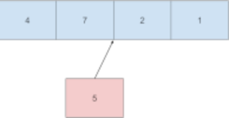

TP 11 - Les Listes Corrigé
| TD n°11 : Structures de données - Listes | Thème 1 : Structures de données |
|---|---|
| CORRIGE | COURS et EXERCICES |
📘 Le Programme en N.S.I en Terminale
Notre objet d’étude aujourd’hui est la structure de données linéaire liste. Les objectifs de ce travail sont :
- de définir la structure de données liste. Pour cela nous allons nous concentrer sur ses méthodes,
- de manipuler cette structure de données,
- d’appréhender la notion de mutabilité des listes (elles peuvent changer),
- d’appréhender la complexité de la manipulation des listes,
- de comprendre que ce qui est appelé \textbf{List} en Python n’est pas une liste au sens commun du terme.
I. La structure de donnée
Vous connaissez déjà la structure de liste puisque vous l’avez largement utilisée dans les programmes Python que vous avez pu écrire précédemment. Vous avez créé des listes, ajouté des éléments, accédé à sa longueur, accédé à un élément, etc.
Liste Python
Python abuse du terme liste qu’il utilise pour ce qui sont des tableaux dynamiques munis de méthodes d’accès typiques des listes. Nous nous intéressons ici à ce que les informaticiens appellent vraiment des listes.
II. Qu’est-ce qu’une liste ?
Intuitivement. Une liste est une collection finie d’éléments qui se suivent. C’est donc une structure de données linéaire.
Une liste peut contenir un nombre quelconque d’éléments y compris nul (la liste vide).
Liste
Une liste est une structure de données permettant de regrouper des données.
C'est une collection finie et ordonnée d'éléments, cela signifie que chaque élément d'une liste est repéré par son index (sa position).
A la différence d'un tableau qui est de taille fixe, une liste est extensible :
- on peut lui ajouter des éléments,
- on peut lui retirer des éléments;
III. Un peu d'histoire pour commencer

Le langage LISP, inventé par John Mac Carthy (photo) en 1958, est un des premiers à utiliser la notion de liste (LISP vient de l'anglais list processing signifiant « traitement de listes »).
Les listes du langage LISP sont composées de deux parties :
- une tête correspondant
au premier élément de la liste - une queue correspondant au
restede la liste
On pouvait alors construire une liste à partir d'un premier élément (sa tête) et d'une liste (sa queue).
IV. Obtenir une définition formelle
Prenons une liste comme par exemple \(L_1=[5,3,8]\). C’est une liste à trois éléments (ou de longueur trois) dont le premier est 5, le deuxième 3, et le dernier 8.
Une façon de décrire cette liste consiste à dire que
- la liste \(L_1\) possède un premier élément 5 qu’on nommera élément de tête,
- et que vient après cet élément de tête la liste \(L_2=[3,8]\) des éléments qui suivent, liste qu’on nommera reste.
Ce qu’on vient de dire de la liste \(L_1\) peut être répété pour la liste \(L_2\) qui est donc constituée :
- d’un élément de tête : 3,
- et d’un reste : \(L_3=[8]\).
À nouveau on peut répéter le même discours pour la liste \(L_3\) qui est donc constituée :
- d’un élément de tête : 8,
- et d’un reste : \(L_4=[]\).
La liste \(L_4\) étant vide, elle ne possède pas d’élément de tête, et ne peut donc pas être décomposée comme nous venons de le faire à trois reprises.
Si on convient d’utiliser la notation \((e,L)\) pour désigner le couple constitué de l’élément \(e\) de tête, et du reste \(L\) d’une liste, on peut alors écrire :
➡ Représentation schématique :

Ce qui vient d’être fait pour la liste \(L_1\) peut être reproduit pour n’importe quelle liste.
On peut conclure cette approche en donnant une définition abstraite et formelle des listes d’éléments appartenant tous à un ensemble E.
Une liste d’éléments d’un ensemble E est * soit la liste vide * soit un couple \((e,L)\) constitué d’un élément \(e \in E\) et d’une liste \(L\) d’éléments de E.
Les listes peuvent donc être vues comme des structures de données récursives
V. L'interface minimale du type abstrait Liste
Le type abstrait Liste peut alors être défini par l'interface suivante contenant 5 opérations primitives :
- Des constructeurs :
listevide()pour construire une liste videconstruit(e,\ L)pour construire une nouvelle liste contenant un premier élémente(sa tête) et une suiteL(sa queue, qui est une liste). Cet opérateur est aussi souvent notécons.- Des sélecteurs :
premier(L)pour accéder au premier élément de la listeL, sa tête. Cet opérateur est aussi souvent notécar.reste(L)pour accéder au reste de la listeLc'est-à-dire sa queue. Cet opérateur est aussi souvent notécdr.- Un prédicat (une question dont la réponse est un booléen (V/F)) :
estvide(L)pour tester si une liste est vide.
Ainsi, pour construire une liste formée par les nombres 5, 3, 8 (dans cet ordre) on fait :
maliste1 = construit(5, construit(3, construit(8, listevide())))
Dans ce cas,
premier(maliste1)correspond à sa tête, c'est-à-dire 5reste(maliste1)correspondant à sa queue, c'est-à-dire la liste correspondant àconstruit(3, construit(8, listevide()))formée des nombres 3 et 8.
On sait depuis les travaux de Mac Carthy sur le langage LISP, qu'avec ces 5 opérations on peut reconstruire toutes les opérations sur les listes (accéder à un élément, modifier un élément, ajouter/supprimer un élément, calculer la longueur, tester l'appartenance, etc.)
VI. Liste vs tableaux
✏ Qu’est ce qui différencie les listes des tableaux ?⚓︎
Tableau
Sa taille est fixe, les élèments se suivent en méroire.
Accéder à son élèment par son indice est rapide.

Liste
Les élèments ne se suivent pas forcément en mémoire.
La queue de la liste pointe vers une autre liste.
Accéder à un élèment par son indice est lent (il faut suivre tous les liens)
✏ Insertion d'un élèment :⚓︎
Dans un tableau⚓︎
Tableau de taille 4 :
Pour nsérer un élèment il faut recréer un tableau de taille supérieure

Nouveau Tableau de taille 5 :

Dans une liste :⚓︎
Pour insérer un élèment, c'est facile !

Liste
1. on casse le lien entre "2" et Liste(1,())
2. On fait pointer la queue aprés 5 sur Liste(1,())
3. On fait pointer la queue aprés 2 sur Liste(5,(1,()))

C'est beaucoup plus rapide que pour les tableaux.

Activité 1 : Utiliser une interface
On rappelle que le type abstrait Liste peut être défini par l'interface suivante contenant 5 opérations primitives :
- Des constructeurs :
- listevide() pour construire une liste vide
- construit(e, L) pour construire une nouvelle liste contenant un premier élément
e(sa tête) et une suiteL(sa queue, qui est une liste). Cet opérateur est aussi souvent notécons. - Des sélecteurs :
- premier(L) pour accéder au premier élément de la liste
L, sa tête. Cet opérateur est aussi souvent notécar. - reste(L) pour accéder au reste de la liste
Lc'est-à-dire sa queue. Cet opérateur est aussi souvent notécdr. - Un prédicat :
- estvide(L) pour tester si une liste est vide.
Question 1 : On considère la liste L1 suivante :
L1=construit(1, contruit(3, construit(-2, construit(0, listecide()))))
- Quelle est la liste construite ?
- Que vaut chacune des variables suivantes ?
e1=premier(L1)
L2=reste(L1)
L3=reste(reste(L1))
e2=premier(reste(reste(L1)))
L4=construit(5, L3)
Question 2 : Écrivez les instructions permettant de :
- construire une liste
maliste1contenant les nombres 5, 2, 4, 7 dans cet ordre - stocker dans une variable
e1le premier élément demaliste1 - stocker dans une variable
e2le deuxième élément demaliste1 - stocker dans une variable
e3le dernier élément demaliste1 - construire une liste vide appelée
maliste2 - construire, à partir de
maliste1, une listemaliste3contenant uniquement les nombres 4 et 7. - construire, uniquement à partir des listes et variables précédentes, une liste
maliste4contenant les nombres 5, 2, 1, 4, 7 (on veut insérer 1 entre 2 et 4 dans liste de départ).
VII. Implémentations possibles
✏ VII.1. Une implémentation avec des couples en Python⚓︎
Cette première implémentation est basée sur des paires (couples) qui comportent chacune un élément et la suite de la liste, qui elle-même peut être une paire... Elle réutilise le type tuple de Python.
On définit ainsi notre structure de données de manière récursive pour respecter la philosophie du langage LISP.
Activité 2 : Écriture de quelques opérations dérivées
On considère toujours la même interface (que dans l’activité 1) pour le type abstrait de données Liste. Voici une implémentation utilisant des couples, à compléter :
def listevide():
return None # on utilise None pour une liste vide
def construit(e, L):
return (e,L) # renvoie un tuple de deux éléments
def premier(L):
return L[0] # accès au premier élément du couple (la tête de L)
def reste(L):
return L[1] # accès au deuxième élément du couple (la queue de L)
def estvide(L):
return L is None # L est égal à None ?
On peut alors tester les instructions précédentes et en affichant le contenu de maliste1, on se rend compte de l’implémentation choisie avec des paires imbriquées.
maliste1 = construit(5, construit(3, construit(8, listevide())))
maliste1
(5, (3, (8, None)))
On a donc logiquement :
premier(maliste1)
5
reste(maliste1)
(3, (8, None))
Avec cette implémentation, il est intéressant de noter que la contruction de maliste1 avec l’instruction
construit(5, construit(3, construit(8, listevide())))
(5, (3, (8, None)))
nécessite la construction 3 paires intermédiaires qui sont construites de la plus imbriquée (liste vide) à la moins imbriquée. On peut visualiser facilement cela avec Python tutor.
✏ Partie A : Utilisation des opérations⚓︎
Question 1 : Utilisez cette implémentation pour vérifier vos réponses à l’activité 1.
L1=construit(1, construit(3, construit(-2, construit(0, listevide()))))
e1=premier(L1)
print(e1)
L2=reste(L1)
print(L2)
L3=reste(reste(L1))
print(L3)
e2=premier(reste(reste(L1)))
print(e2)
L4=construit(5, L3)
print(L4)
1
(3, (-2, (0, None)))
(-2, (0, None))
-2
(5, (-2, (0, None)))
✏ Partie B : Ecriture d’opérations dérivées⚓︎
On a vu dans le cours qu’il est possible de construire toutes les opérations à partir des 5 opérations primivites données ci-dessus. Par exemple, pour obtenir le dernier élément d’une liste, on peut implémenter l’opération dernier(L) à partir des autres :
def dernier(L):
"""Liste --> Element
Précondition : L n’est pas vide."""
assert estvide(L)!=None
L1=L
while L1!=None:
dernier=premier(L1)
L1=reste(L1)
return dernier
L1 = construit(1, construit(3, construit(-2, construit(0,listevide()))))
dernier(L1)
0
On rappelle que l’on peut écrire un jeu de tests en utilisant la construction assert.
liste1= construit(2, listevide())
liste2= construit(1, construit(2, construit(5, listevide())))
assert dernier(liste1) == 2
assert dernier(liste2) == 5
Question 2 : On souhaite implémenter en une fonction l’opération taille(L) qui renvoie le nombre d’éléments contenus dans la liste L. 1. Écrivez un jeu de tests de qualité pour cette fonction. 2. Proposez le code de cette fonction avec sa docstring (qui doit passer les tests avec succès).
def taille(L):
L1=L
if L1==None:
return 0
else:
t=0
while L1!=None:
t+=1
L1=reste(L1)
return t
L1 = construit(1, construit(3, construit(-2, construit(6,listevide()))))
taille(L1)
assert taille(L1)==4
L2=(None)
assert taille(L2)==0
Question 3 : Mêmes questions avec l’opération lire(L, i) renvoie le i-ème élément de la liste L.
def lire(L,i):
L1=L
if i>taille(L1):
return False
else:
t=0
while t!=i:
t+=1
L1=reste(L1)
rep=premier(L1)
return rep
print(L1)
lire(L1,2)
lire(L1,5)
(1, (3, (-2, (6, None))))
False
✏ VII.2. Une implémentation avec le type list de Python⚓︎
Il est possible d’implémenter les 5 opérations définissant le type abstrait Liste en utilisant le type pré-
défini list de Python. Les fonctions sont très ressemblantes à celles utilisant les couples.
Cela fait l’objet des activités 3 et 4 qui proposent deux implémentations différentes :
- la première avec copie des listes intermédiaires (comme l’implémentation avec les couples)
- la seconde avec modification de la liste en place.
Activité 3 : Une implémentation avec le type list de Python
On veut maintenant implémenter le type abstrait Liste en utilisant le type list de Python.
Question 1 : Utilisez la documentation officielle pour compléter l’implémentation du type Liste avec
les possibilités offertes par le type list de Python.
def listevide():
return []# renvoie une liste vide
def construit(e, L):
# renvoie une liste qui est la concaténation d’une liste contenant e avec la liste L
return [e]+L
def premier(L):
# renvoie le premier élément de L
return L[0]
def reste(L):
# renvoie une liste contenant les éléments de L à partir de la position 1
return L[1:]
def dernier(L):
return L[-1]
def estvide(L):
# renvoie True si L est vide, False sinon
if L==[]:
return True
else:
return False
Question 2 : Vérifiez qu’en exécutant le code suivant, on obtient exactement le même résultat qu’avec la première implémentation. L’utilisateur curieux pourra cependant observer la structure des informa- tions mémorisées en affichant les listes L1 (implémentée par des couples) et L2 (implémentée par le type list de Python).
L2 = construit(1, construit(3, construit(-2, construit(-3, listevide())))) #construction avec la nouvelle implémentation
print(L2)
dernier(L2)# renvoie le dernier élément de la liste construite
[1, 3, -2, -3]
-3
Question 3 : Utilisez Python Tutor pour observer pas à pas la construction de la liste L2 précédente. Combien de listes intermédiaires sont créées pour construire la liste L2 avec cette implémentation ?